| Place | Name | Image | Description |
|---|---|---|---|
| 1 | Dragons | 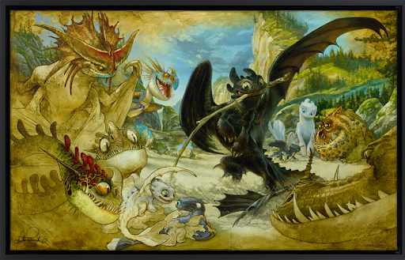 | A dragon is a large, serpentine, legendary creature that appears in the folklore of many cultures worldwide. Beliefs about dragons vary considerably through regions, but dragons in western cultures since the High Middle Ages have often been depicted as winged, horned, four-legged, and capable of breathing fire.(How To Train Your Dragon has the best; Fact) |
| 2 | Oriental Dragons | 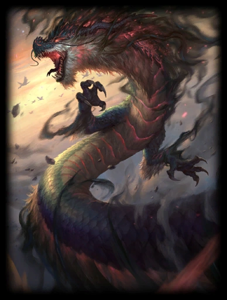 | The Oriental Dragon (also known as the Eastern Dragon) is another one of the world's most commonly known dragons. They are found in folklore, mythology, and religion all throughout East Asia. These dragons were said to been guardians. They were the supposed protectors of heaven. |
| 3 | Jörmungandr | 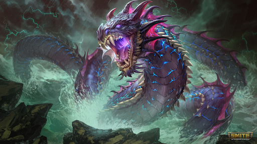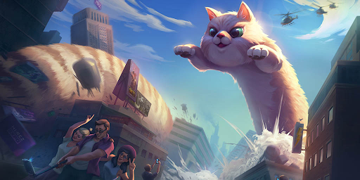 | Jormungand (pronounced “YOUR-mun-gand;” Old Norse Jörmungandr, “Great Beast”), also called the “Midgard Serpent,” is a snake or dragon who lives in the ocean that surrounds Midgard, the visible world. So enormous is he that his body forms a circle around the entirety of Midgard. He’s one of the three children of Loki and the giantess Angrboda, along with Hel and Fenrir. |
| 4 | Nine Tailed Fox (Kitsune) | 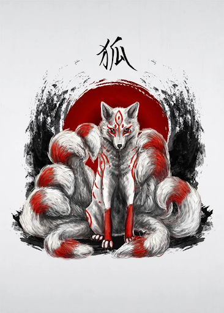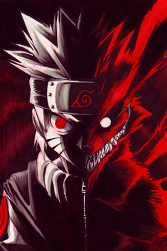 | In the Qin Dynasty, the nine-tailed fox was an auspicious symbol. The appearance of a nine-tailed fox symbolizes peace and prosperity in the world. According to the ancient illustrated book of Ruiying Tupu《瑞应图谱》, when the king is over-distracted by beauty, the nine-tailed fox would arrive (王者不倾于色，则九尾狐至). Not to mention it is very big the Narutoverse considering Kurama who plays a huge part in Narutos life which impacts the stroy as a whole. Kurama is the Nine Tailed Fox in that Universe although its a bit different there. Ahri In LoL is also the Nine Tailed Fox but that's not important |
| 5 | Gorgon | 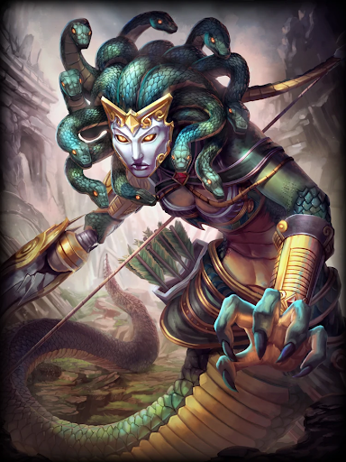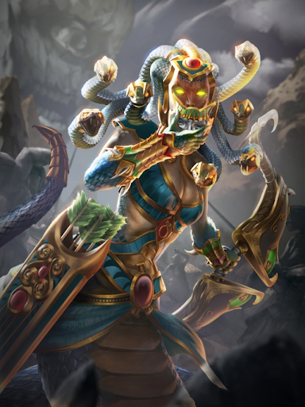 | A Gorgon is a creature in Greek mythology that occurs in the earliest examples of Greek literature. While descriptions of Gorgons vary, the term most commonly refers to three sisters who are described as having hair made of living, venomous snakes and horrifying visages that turned those who beheld them to stone (Medusa from the Legendary Epic of Perseus is the most known form of a Gorgon). |
| 6 | Phoenix | 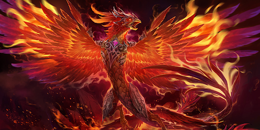 | The phoenix is an immortal bird associated with Greek mythology that cyclically regenerates or is otherwise born again. Associated with the sun, a phoenix obtains new life by arising from the ashes of its predecessor. |
| 7 | Hydra | 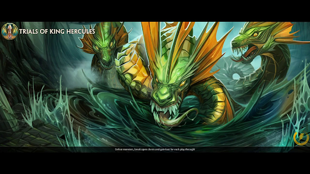 | The Hydra is one of the most notorious dragons, uniquely dangerous and difficult to defeat. In Greek mythology, the Lernean Hydra (also called the Exedra) had, depending on the account, nine, fifty, or a thousand heads, and when a head was hacked off, another would grow back. |
| 8 | Cerberus | 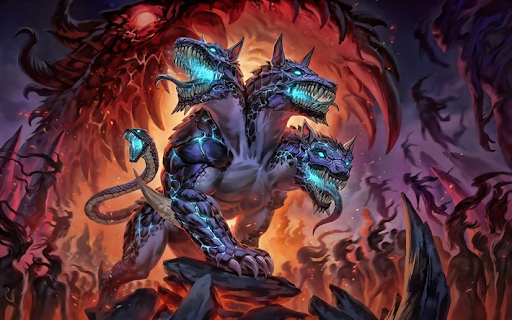 | Cerberus, in Greek mythology, the monstrous watchdog of the underworld. He was usually said to have three heads, though the poet Hesiod said he had 50. Heads of snakes grew from his back, and he had a serpent's tail. |
| 9 | Minotaur | 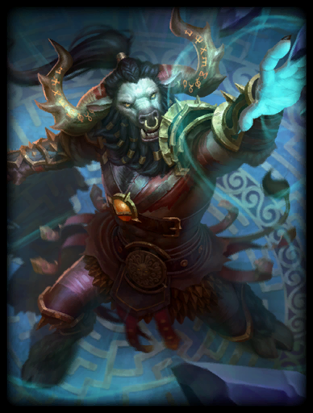 | Minotaur, Greek Minotauros (“Minos's Bull”), in Greek mythology, a fabulous monster of Crete that had the body of a man and the head of a bull. It was the offspring of Pasiphae, the wife of Minos, and a snow-white bull sent to Minos by the god Poseidon for sacrifice. The Minotaur was in charge of Gaurding the Labrynth, and it did just that slaying anyone who would dare enter. When the third time of sacrifice came, the Athenian hero Theseus volunteered to go, and, with the help of Ariadne, daughter of Minos and Pasiphae, he slew the beast and ended the tribute. |
| 10 | Kraken | 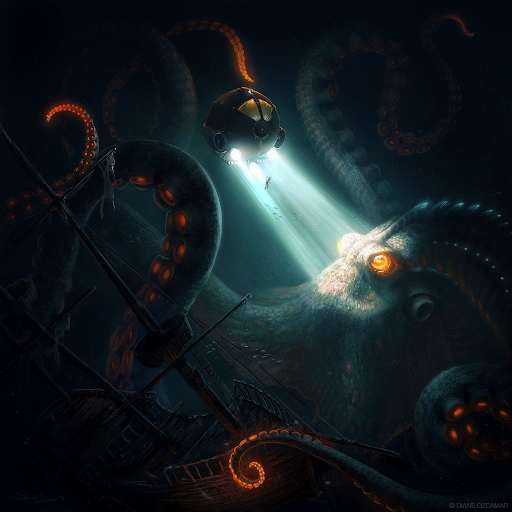 | The kraken is a legendary sea monster of gigantic size and cephalopod-like appearance in Scandinavian folklore. According to the Norse sagas, the kraken dwells off the coasts of Norway and Greenland and terrorizes nearby sailors. |